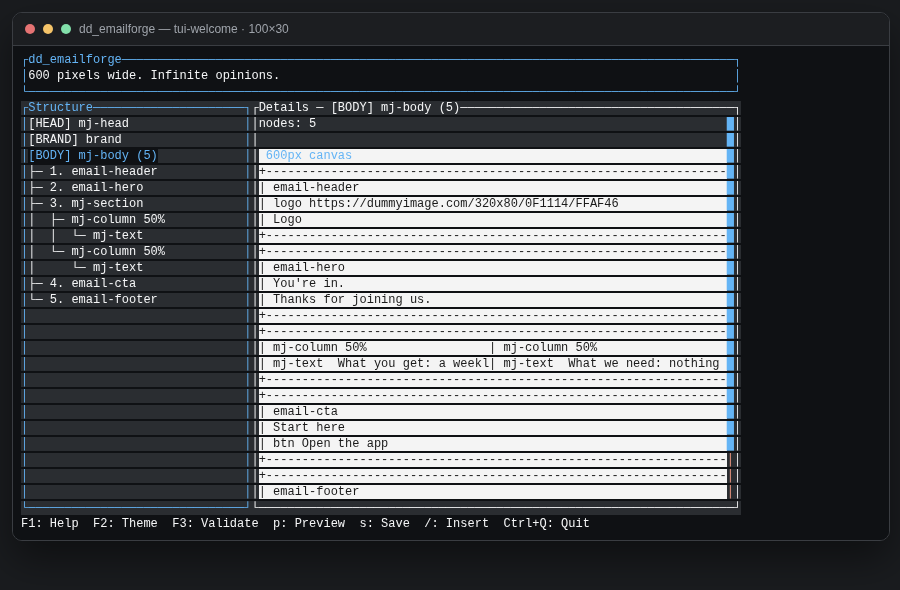
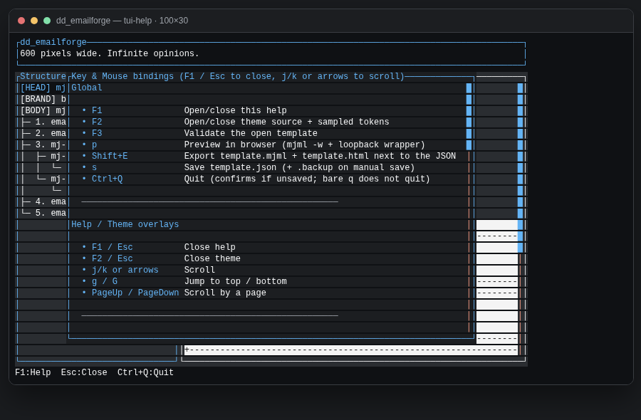
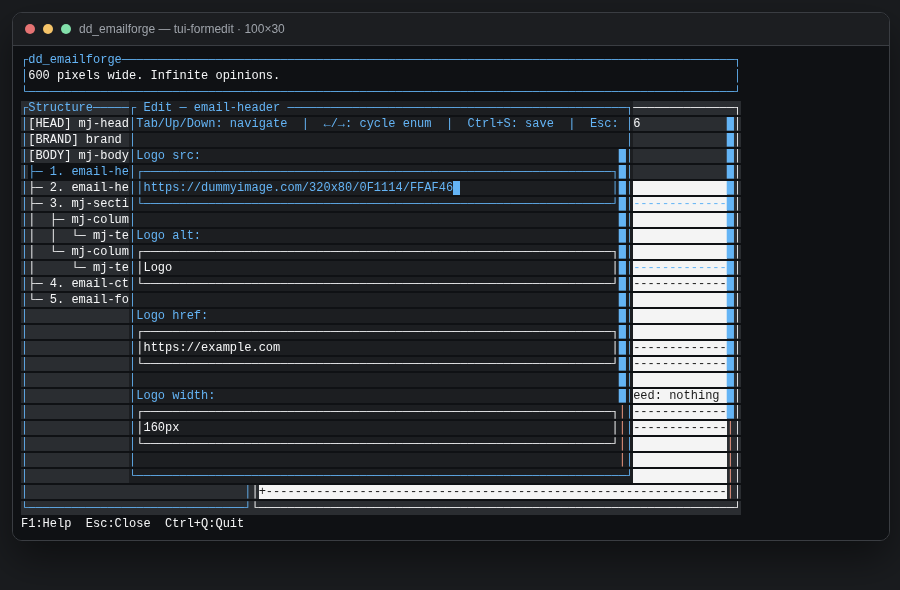
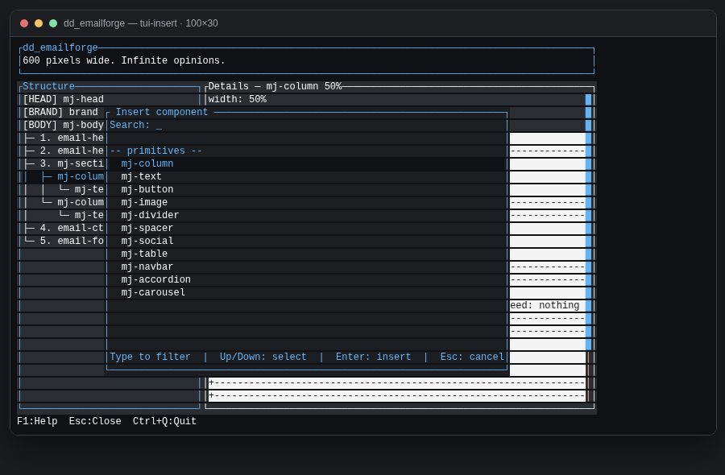
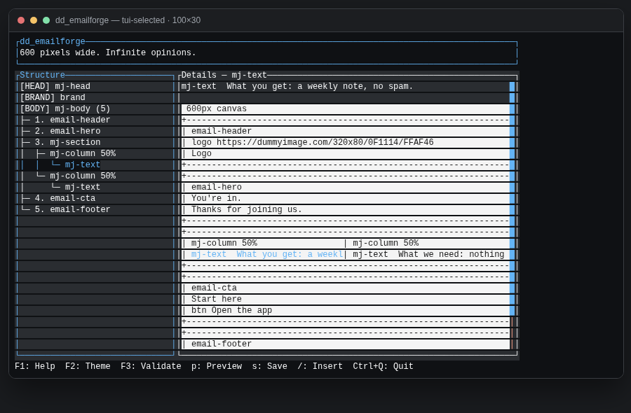

What you get
dd_emailforge is a Ratatui TUI. You edit a typed template.json. The app emits strict MJML and compiles HTML with official MJML 5 (mjml ^5.4.0).
- JSON is the source of truth. One folder per template.
- Brand tokens live on the template and emit as
mj-attributes. - Preview is a loopback wrapper (600px + 320px). Exported HTML has none of that chrome.
template.json → template.mjml → template.html
│
└─ mjml -w → .preview/ (TUI p / CLI preview)
Prerequisites
- curl (and
tar) — for the one-line install, which downloads a prebuilt package for your OS/arch. - Node 20+ — MJML 5’s compiler. Needed to preview or export HTML.
- Optional: a global
mjmlon yourPATH. If you have it, skipnpm installafterinit. - Optional: Rust / cargo — only if you install from a clone (
./install.shthen callscargo build --release) or if no GitHub Release package exists for your machine.
Install
Download the package that matches this machine (Linux or macOS, x86_64 or aarch64):
curl -fsSL https://raw.githubusercontent.com/ldnddev/dd_emailforge/main/install.sh | bash
That installs $HOME/.local/bin/dd_emailforge, writes the default theme to ~/.config/ldnddev/dd_emailforge_theme.yml (only if none exists), and creates ~/.config/ldnddev/dd_emailforge/templates/. Pin a release with VERSION=v0.7.0.
From a clone of this repo (builds with cargo):
./install.sh ./install.sh --from-release # GitHub package even from a clone
PREFIX, BIN_DIR, or CONFIG_DIR. Honors XDG_CONFIG_HOME. Re-run is safe: an existing theme is left alone; the binary is overwritten.
curl -fsSL https://raw.githubusercontent.com/ldnddev/dd_emailforge/main/install.sh | bash -s -- uninstall ./install.sh uninstall # same, from a clone ./install.sh --help
If ~/.local/bin is not on your PATH, add it:
export PATH="$HOME/.local/bin:$PATH"
Create a template
dd_emailforge init ./my-email --from welcome # skip npm install when `mjml` is already on PATH cd my-email && npm install dd_emailforge tui .
A directory argument means dir/template.json. init writes:
template.json— the documentimages/.gitkeep— drop local images herepackage.json— pinsmjml ^5.4.0(does not run npm).gitignore—.preview/,node_modules/,template.json.backup
--from | Intent | Footer |
|---|---|---|
welcome (default) | Post-signup | address + Unsubscribe + *|UNSUB|* |
newsletter | Digest | same |
promo | Sale | same |
transactional | Receipt / reset | address; empty unsub label and href (F3 stays clean) |
Welcome ships Google Font Raleway. Starter images are https://dummyimage.com/… placeholders.
Open the TUI
dd_emailforge tui with no path still launches chrome. You’ll get an info toast until a template exists:

dd_emailforge init <dir>, then tui on that folder.After init --from welcome:

Chrome
- Header — app name + a rotating tagline (3 rows, including borders).
- Structure —
[HEAD],[BRAND],[BODY], then sections / columns / components. j/k move, h/l collapse/expand, Space toggles. - Details — field summary for the selection, then a blueprint of every layout node. The selected element is highlighted. Click a region to select it in the tree.
- Footer — one adaptive key bar. Narrow terminals drop keys; they never wrap.
Below 48 columns, Details hides and you get Structure only. Tab toggles pane focus when both panes exist.
F1 is the full key + mouse list:

Edit, insert, select
FormEdit
Select a row and press Enter (or double-click). Tab between fields, cycle enums with left/right, Ctrl+S saves, Esc cancels. On image URL fields, Ctrl+P opens a picker rooted at images/ (it cannot walk above the template folder).

email-header. Dummyimage URLs in starters are valid https:// placeholders — swap them for real assets.Insert
/ opens a fuzzy picker filtered to kinds that are legal for the current selection. Nested tags stay under their MJML parent: mj-navbar-link only under mj-navbar, accordion elements only under accordion, carousel images only under carousel. A section takes columns and groups, not leaves as direct children (a leaf splices into the last column, or wraps a column on empty BODY).

mj-column. Type to filter, Enter inserts, Esc cancels. Navbar / accordion / carousel are column children.Blueprint click-to-select
The details canvas always shows the full email. Click a box (or its nested text) to select that node in the tree. Innermost hit wins. The tree expands ancestors so the row is visible.

mj-text is highlighted in Structure and in the blueprint. Click the other column’s text to hop there without walking the tree.Other tree edits: d delete (not HEAD/BRAND/BODY), y duplicate, u undo (cap 20), J/K reorder, C/V add/remove a column (equal-% widths), c/v hop columns.
Autosave rewrites template.json 2s after a change when a path is set. Manual s also writes template.json.backup.
Validate, preview, export
| Action | TUI | CLI |
|---|---|---|
| Validate | F3 | dd_emailforge validate <dir> |
| Preview | p | dd_emailforge preview <dir> --port 8766 |
| Export MJML+HTML | Shift+E | dd_emailforge export <dir> |
| Dump JSON | — | dd_emailforge show <dir>/template.json |
F3 / preview / export all gate on validation errors. Warnings (unused font, marketing unsub heuristic) toast or print but do not block.
- The compiler is official Node
mjmlonly. Discovery:{root}/node_modules/.bin/mjml, thenPATH. Never mrml, nevernpx. - Preview rewrites relative image
srctohttp://127.0.0.1:{port}/images/…and opens a loopback wrapper (600 + 320 iframes). CLI preview defaults to port 8766; TUI preview binds127.0.0.1:0. - Export writes
template.mjml+template.htmlnext to the JSON (or--out dir). Relative images need anhttps://base_urlon the template. Dummyimage URLs already qualify.
dd_emailforge export ./my-email dd_emailforge export ./my-email --out ./dist dd_emailforge preview ./my-email --port 8766
Keys
| Key | Action |
|---|---|
| F1 | Help |
| F2 | Theme source + sampled tokens |
| F3 | Validate |
| p | Preview |
| Shift+E | Export |
| s | Save JSON + .backup |
| / | Insert picker (legal kinds only) |
| Enter | FormEdit |
| Ctrl+Q | Quit (confirm if unsaved) |
| j/k g/G h/l Space | Tree move / jump / fold |
| d y u J/K | Delete / duplicate / undo / reorder |
| C/V c/v | Add/remove column · prev/next column |
| Ctrl+P | Image picker on src fields |
Theme
Lookup order (first file that exists and declares version: 1 wins):
./dd_emailforge_theme.yml$XDG_CONFIG_HOME/ldnddev/dd_emailforge_theme.ymlifXDG_CONFIG_HOMEis set~/.config/ldnddev/dd_emailforge_theme.yml- Built-in defaults
Schema: LDNDDEV_TUI_VISUAL_STANDARD.md. Do not invent tokens.
Updating screenshots
The PNGs under docs/tutorial/images/ are not hand-drawn. They are screenshots of HTML frames dumped from the live Ratatui renderer (same App::draw path as the TUI).
From the repo root:
./docs/tutorial/capture.sh
That will:
- Run the ignored test
tui::tutorial_shots::capture_tutorial_frames, which writes one HTML frame per shot using a pinned header quote and the welcome starter (or empty chrome). - Open each frame in headless Chromium and write the PNG.
- Delete the temporary
_frame-*.htmlfiles.
Requires cargo and a Chromium/Chrome binary on PATH (or set CHROME). Optional: EMAILFORGE_TUTORIAL_SHOTS=/some/dir to write somewhere else.
| File | Scene (edit src/tui/tutorial_shots.rs to change) |
|---|---|
tui-empty.png | No template; info toast pointing at init |
tui-welcome.png | Welcome starter, BODY selected, full blueprint |
tui-insert.png | / picker on an mj-column |
tui-formedit.png | FormEdit on email-header |
tui-help.png | F1 help overlay |
tui-selected.png | mj-text selected in tree + blueprint highlight |
./docs/tutorial/capture.sh and commit the PNGs with the code. Do not redraw these in an image editor — the capture path is the source of truth so labels stay honest. To add a shot: append a writer in capture_tutorial_frames, add the filename here and in this page’s <figure>, then recapture.
More capture notes: docs/tutorial/README.md.
More docs
- Architecture.md — crate map, pipeline, keys
- docs/SPEC.md — living conventions
- docs/DESIGN.md — locked design
- components/*.md — per-node field contracts